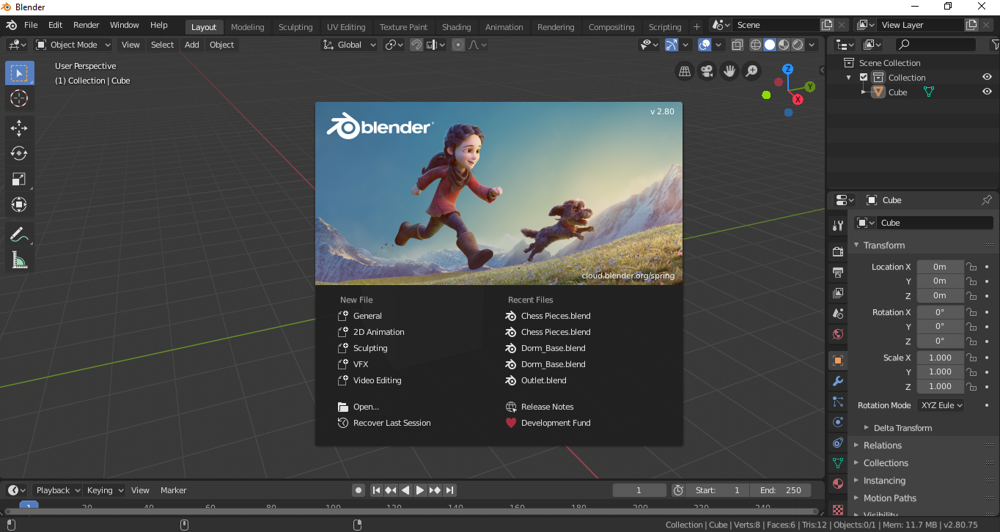

Devlog #01 - Getting Started
This is a devlog example, here you will find info about the current development process of a project. Alongside text describing the development process, these posts can and usually contain images, video material, links and other external media files.
Example of an image
For example, the image above is used to show Blender, a 3D modeling tool. In devlogs images are usually used to show concept art or work in progress assets. But if we want to display a full preview of an asset, mainly a 3D model, we can use an embed link from a site called Sketchfab.
Example of an embed link (Sketchfab)
Images are awesome but they can't dispaly all necessary information, or how a feature actually works. For that, developers use video material hosted on external platform and embeded into the page.
Example of an embed link (Youtube)
At the end, the developer can add his closing words, a small Q&A about the last devlog, links to other devlogs or social media profiles; or all of the above.